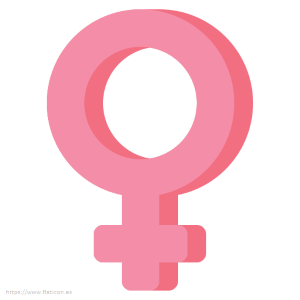

ESCUCHA TU CUERPO
RESPETALO Y AMALO
PORQUE ES EL TEMPLO QUE ALBERGA TU SENSUALIDAD Y TU ENERGIA VITAL
Aparato reproductor
Conjunto de tejidos, glándulas y órganos que participan en la
procreación (tener hijos). En la mujer, abarca los ovarios, las trompas
de Falopio, el útero, el cuello uterino y la vagina. En el
hombre, abarca la próstata, los testículos y el pene. También se
llama aparato genital y sistema reproductor.
Aparato Reproductor Femenino ▼

Los órganos del aparato reproductor femenino constan de genitales
internos y externos. Juntos comprenden el sistema reproductor o sistema
reproductivo femenino, permitiendo las actividades sexuales y
reproductivas.
Los órganos reproductores femeninos experimentan importantes cambios
estructurales y
funcionales cada mes. Estos cambios no sólo están ahí para "complicar" la vida de
las
mujeres, sino que también tienen una función crucial en el inicio del embarazo.
Si no
se
produce el embarazo, el revestimiento endometrial proliferado se rompe y
se
desprende, saliendo por la vagina como sangre menstrual. Estas actividades
ocurren
bajo
la influencia de hormonas secretadas por los órganos sexuales femeninos
(ovarios), según lo determina el sistema endocrino. Las hormonas sexuales
femeninas también tienen un papel importante en la maduración sexual.
El monte del pubis es una eminencia redondeada que se encuentra
por
delante de la sínfisis del pubis. Está formada por tejido
adiposo
recubierto de piel con vello pubico.
El vestíbulo de la vagina es el espacio situado entre los labios
menores
y
en él
se
localizan los orificios de la uretra, de la vagina y de los
conductos de
salida
de las
glándulas vestibulares mayores.
Los labios menores son dos delicados pliegues de piel que no
contienen
tejido
adiposo
subcutáneo ni están cubiertos por vello pero que poseen
glándulas
sebáceas y
sudoríparas. Los labios menores se encuentran entre los labios
mayores y
rodean
el
vestíbulo de la vagina.
Los labios mayores son dos grandes pliegues de piel que
contienen en su
interior
tejido
adiposo subcutáneo y que se dirigen hacia abajo y hacia atrás
desde el
monte
del
pubis.
Después de la pubertad, sus superficies externas quedan
revestidas de
piel
pigmentada
que contiene glándulas sebáceas y sudoríparas y recubierta por
vello.
El clítoris es un pequeño órgano cilíndrico compuesto por tejido
eréctil.
Tiene
2 - 3
cm. de longitud y está localizado entre los extremos anteriores
de los
labios
menores.
Consiste en: dos pilares, dos cuerpos cavernosos y un glande y
se
mantiene
en su
lugar
por la acción de varios ligamentos.
La vagina es el órgano femenino de la copulación,
el lugar por el
que sale
el
líquido menstrual al exterior y el extremo inferior del
canal del
parto.
Se
trata
de un tubo músculomembranoso que se encuentra por
detrás de la
vejiga
urinaria
y
por delante del recto. La vagina comunica por su parte superior
con la cavidad
uterina
ya
que el
cuello del útero se proyecta en su interior, quedando rodeado
por un fondo de
saco
vaginal.
En
esta zona es donde debe quedar colocado el diafragma
anticonceptivo. El
útero
se
encuentra casi en ángulo recto con el eje de la vagina.
El útero es un órgano muscular hueco con forma de
pera que
constituye
parte
del
camino que siguen los espermatozoides depositados en la vagina
hasta alcanzar
las
trompas de
Falopio, su tamaño es mayor después de embarazos
recientes y más
pequeño
cuando
los niveles hormonales son bajos como sucede en la
menopausia.
Varios
ligamentos
mantienen al útero en posición.
Las trompas de Falopio son 2 conductos de 10 - 12 cm. de
longitud y 1 cm. de
diámetro
que se
unen a los cuernos del útero por cada lado. Están diseñadas para
recibir los
ovocitos
que
salen de los ovarios y en su interior se produce el encuentro de
los
espermatozoides con
el
óvulo y la fecundación. La pared de las trompas tiene una
capa interna o
mucosa
con
un
epitelio simple columnar ciliado que ayuda a transportar
el ovocito hasta
el
útero
junto a células secretoras que producen nutrientes para el
mismo.
Los ovarios son 2 cuerpos ovalados en forma de almendra,
se localiza uno
a cada
lado
del
útero y se mantienen en posición por varios ligamentos.
En los ovarios se
forman
los
gametos femeninos u óvulos, que pueden ser fecundados por los
espermatozoides a
nivel de
las
trompas de Falopio, y se producen y secretan a la sangre una
serie de hormonas
como la
progesterona y los estrógenos. En
los ovarios se
encuentran
los
folículos ováricos que contienen los ovocitos en sus
distintas fases de
desarrollo y
las
células que nutren a los mismos y que, además, secretan
estrógenos a la sangre,
a medida
que
los
ovocitos van aumentando de tamaño. El folículo maduro o folículo
De Graaf es
grande,
está
lleno
de líquido y preparado para romperse y liberar el ovocito que
será recogido por
el
infundíbulo
de las trompas de Falopio. A este proceso se le llama
ovulación.
×
Funciones
Ovarios
La
principal función de los ovarios es la producción de óvulos.
Durante la ovulación, el ovario (derecho o el izquierdo) produce un
soloóvulo
maduro, el
cual se desprenderá durante la menstruación y estará listo para su
fecundación
por
parte del
esperma del hombre.
Otra de las funciones de los ovarios es la de producir hormonas
femeninas
estrógenos y la
progesterona, las cuales son las encargadas del adecuado funcionamiento
de
los
órganos sexuales
de la mujer.
Vagina
Aunque la vagina juega un papel fundamental en la reproducción
humana,
su
función se puede
resumir en:
Sirve de paso y salida a la menstruación.
Por medio de ella se elimina el moco cervical.
Es el canal del parto.
Desde ella, los espermatozoides ascienden para fecundar el
óvulo.
Se produce la primera selección de los espermatozoides.
Trompas de Falopio
La función esencial es comunicar los ovarios con el útero y
ser
el
lugar en el que
el óvulo puede ser fecundado.
Se encargan de succionar el óvulo que sale del ovario y lo
transporta hacia el
útero.
La fecundación del óvulo siempre se presenta cuando el óvulo está
recorriendo la
trompa (no se presenta en el útero porque cuando llega aquí se
deshace).
El espermatozoide tiene que encontrar al ovocito en el
recorrido
de
las
trompas para
poder fecundarlo y permanecer en esta zona durante 2 ó 3 días
antes
de
llegar al
útero donde comenzará a crecer el embrión.
Útero
El
útero es el encargado de la gestación. Su principal
función es conservar el óvulo fecundado y ofrecerle las
condiciones
óptimas
para que
desarrolle el embrión en su interior.
.png)